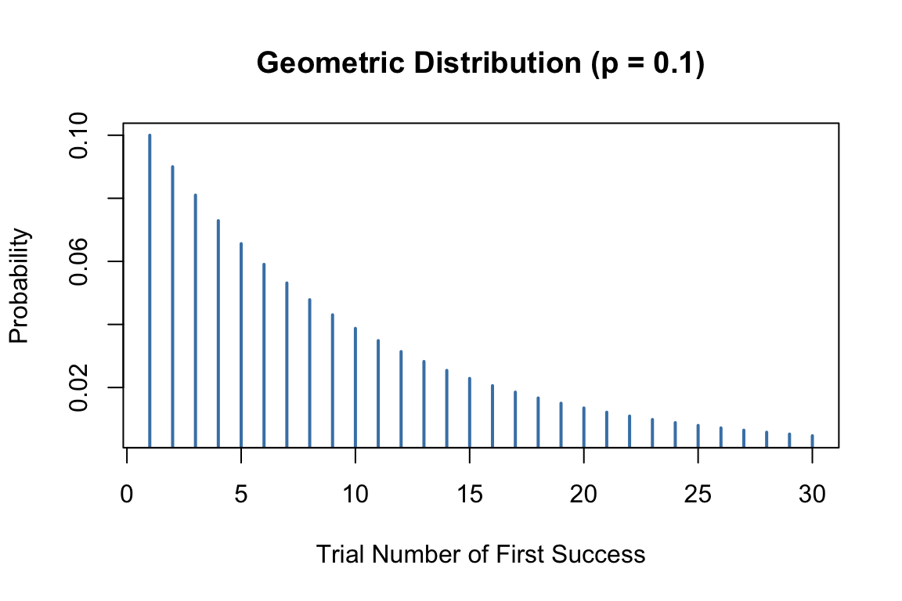

Code
# Simulate 1000 experiments of 20 coin flips each
set.seed(42)
heads <- rbinom(n = 1000, size = 20, prob = 0.5)
hist(heads, breaks = 0:20, col = "steelblue",
main = "Distribution of Heads in 20 Coin Flips",
xlab = "Number of Heads")
Discrete probability distributions describe random variables that take on distinct, countable values. The number of heads in ten coin flips, the count of bacterial colonies on a plate, and the number of defective items in a batch are all discrete random variables. Understanding these distributions allows you to model count data, calculate probabilities of specific outcomes, and perform statistical tests.
The binomial distribution arises when you perform a fixed number of independent trials, each with the same probability of success. It answers questions like: If I flip a coin 20 times, what is the probability of getting exactly 12 heads?
The probability of observing exactly \(k\) successes in \(n\) trials, when each trial has success probability \(p\), is:
\[P(X = k) = \binom{n}{k} p^k (1-p)^{n-k}\]
The binomial coefficient \(\binom{n}{k}\) counts the number of ways to arrange \(k\) successes among \(n\) trials.
The mean of a binomial distribution is \(\mu = np\) and the variance is \(\sigma^2 = np(1-p)\).
# Simulate 1000 experiments of 20 coin flips each
set.seed(42)
heads <- rbinom(n = 1000, size = 20, prob = 0.5)
hist(heads, breaks = 0:20, col = "steelblue",
main = "Distribution of Heads in 20 Coin Flips",
xlab = "Number of Heads")
With a fair coin (\(p = 0.5\)) and 20 flips, we expect about 10 heads on average. The distribution is symmetric and centered at 10.
In R, functions for the binomial distribution include:
dbinom(k, n, p) - probability of exactly k successespbinom(k, n, p) - probability of k or fewer successes (cumulative)qbinom(q, n, p) - quantile function (inverse of cumulative)rbinom(n, size, p) - generate random samples# Probability of exactly 10 heads in 20 flips
dbinom(10, size = 20, prob = 0.5)[1] 0.1761971# Probability of 10 or fewer heads
pbinom(10, size = 20, prob = 0.5)[1] 0.5880985The Poisson distribution models the number of events occurring in a fixed interval of time or space, when events occur independently at a constant average rate. It is appropriate for count data like the number of mutations in a DNA sequence, phone calls received per hour, or organisms per quadrat in an ecological survey.
The probability of observing exactly \(r\) events when the average rate is \(\lambda\) is:
\[P(Y = r) = \frac{e^{-\lambda} \lambda^r}{r!}\]
A remarkable property of the Poisson distribution is that the mean and variance are both equal to \(\lambda\). This provides a simple check: if your count data has variance much larger than its mean, a simple Poisson model may not be appropriate (a situation called overdispersion, common in biological data).

# Show Poisson distributions with different lambda values
par(mfrow = c(2, 2))
for (lambda in c(1, 3, 5, 10)) {
x <- 0:20
plot(x, dpois(x, lambda), type = "h", lwd = 3, col = "steelblue",
main = paste("Poisson, λ =", lambda),
xlab = "Count", ylab = "Probability")
}

As \(\lambda\) increases, the Poisson distribution becomes more symmetric and approaches a normal distribution.
# Probability of exactly 2 events when lambda = 1
dpois(x = 2, lambda = 1)[1] 0.1839397# Plot Poisson probabilities
plot(dpois(x = 0:10, lambda = 3), type = "h", lwd = 3,
xlab = "Count", ylab = "Probability",
main = "Poisson Distribution (λ = 3)")
The geometric distribution describes the number of trials needed to achieve the first success. If each trial has success probability \(p\), the probability that the first success occurs on trial \(k\) is:
\[P(X = k) = (1-p)^{k-1} p\]
The mean is \(1/p\) and the variance is \((1-p)/p^2\).
For example, if the probability of a cell successfully transfecting is 0.1, the geometric distribution tells us how many cells we need to attempt before getting our first successful transfection.
# Probability of first success on each trial
p <- 0.1
trials <- 1:30
probs <- dgeom(trials - 1, prob = p) # dgeom counts failures before first success
plot(trials, probs, type = "h", lwd = 2, col = "steelblue",
xlab = "Trial Number of First Success",
ylab = "Probability",
main = "Geometric Distribution (p = 0.1)")

The negative binomial distribution generalizes the geometric distribution. It describes the number of trials needed to achieve \(r\) successes. If each trial has success probability \(p\), the probability that the \(r\)th success occurs on trial \(k\) is:
\[P(X = k) = \binom{k-1}{r-1} p^r (1-p)^{k-r}\]
The mean is \(r/p\) and the variance is \(r(1-p)/p^2\).
Consider a predator that must capture 10 prey to reach reproductive maturity. If the daily probability of catching prey is 0.1, the negative binomial distribution describes when the predator will be ready to reproduce.

The negative binomial is also commonly used to model overdispersed count data—counts with variance greater than their mean—which the simple Poisson cannot accommodate.
R uses a consistent naming convention for distribution functions:
| Prefix | Purpose | Example |
|---|---|---|
d |
Probability mass/density function | dbinom(), dpois() |
p |
Cumulative distribution function | pbinom(), ppois() |
q |
Quantile function | qbinom(), qpois() |
r |
Random number generation | rbinom(), rpois() |
This pattern applies to all distributions in R:
| Distribution | Functions |
|---|---|
| Binomial | dbinom, pbinom, qbinom, rbinom |
| Poisson | dpois, ppois, qpois, rpois |
| Geometric | dgeom, pgeom, qgeom, rgeom |
| Negative Binomial | dnbinom, pnbinom, qnbinom, rnbinom |
Selecting the appropriate distribution depends on the nature of your data and the process generating it.
Use the binomial when you have a fixed number of independent trials with constant success probability and you are counting successes. Examples include the number of patients responding to treatment out of a fixed sample, the number of correct answers on a test, or the number of defective items in a batch.
Use the Poisson when you are counting events in a fixed interval of time or space, events occur independently, and the average rate is constant. Examples include mutations per gene, radioactive decays per minute, or organisms per quadrat. Remember that for Poisson data, mean should approximately equal variance.
Use the geometric when you are counting trials until the first success. Examples include the number of attempts until a successful measurement or the number of patients screened until finding one eligible for a trial.
Use the negative binomial when counting trials until a specified number of successes, or when modeling overdispersed count data (variance exceeds mean).
Understanding distributions deepens through simulation. Generate data from each distribution, visualize it, and calculate summary statistics. Compare the theoretical mean and variance to what you observe in your simulated samples.
# Compare theoretical and empirical properties
set.seed(123)
# Poisson with lambda = 5
pois_sample <- rpois(10000, lambda = 5)
cat("Poisson (λ = 5):\n")Poisson (λ = 5):cat("Theoretical mean:", 5, " Observed:", mean(pois_sample), "\n")Theoretical mean: 5 Observed: 4.9746 cat("Theoretical var:", 5, " Observed:", var(pois_sample), "\n\n")Theoretical var: 5 Observed: 4.896444 # Binomial with n = 20, p = 0.3
binom_sample <- rbinom(10000, size = 20, prob = 0.3)
cat("Binomial (n = 20, p = 0.3):\n")Binomial (n = 20, p = 0.3):cat("Theoretical mean:", 20 * 0.3, " Observed:", mean(binom_sample), "\n")Theoretical mean: 6 Observed: 5.9732 cat("Theoretical var:", 20 * 0.3 * 0.7, " Observed:", var(binom_sample), "\n")Theoretical var: 4.2 Observed: 4.149097 This kind of simulation-based exploration builds intuition that complements formal mathematical understanding.